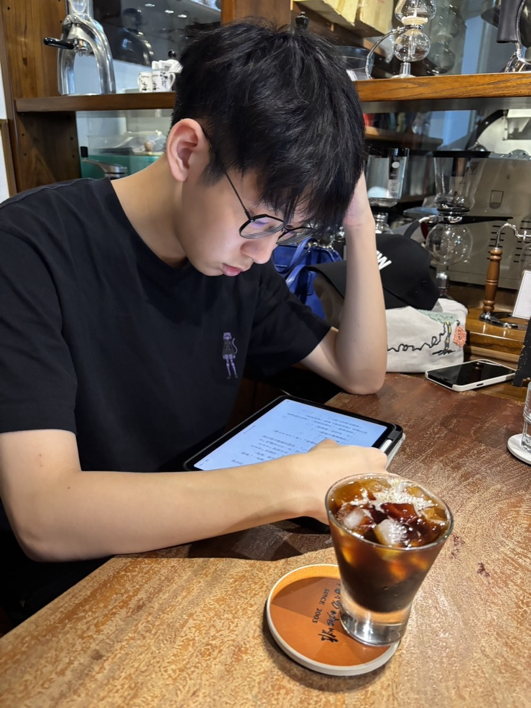

Coverage-Verified Sparse Attention: Closed-Loop Quality Control for Long-Context LLM Decoding
NeurIPS 2026 · Poster
Graduate Institute of Electronics Engineering
National Taiwan University
I am a master's student at National Taiwan University, advised by Prof. Chun-Yi Lee. My research focuses on LLM inference efficiency, particularly sparse attention, KV cache management, and long-context decoding.
Previously, I received my B.S. in Computer Science from National Tsing Hua University.

I will present CVSA at NeurIPS 2026 in Sydney.
CVSA has been accepted to NeurIPS 2026 as a poster.
NeurIPS 2026 · Poster